2015 BMW X5 xDrive50i
The 4.4L twin-turbo V8 X5 with all-wheel drive, in Mineral White Metallic over Mocha Nappa leather. Head-up display, soft-close doors, surround-view cameras and Harman Kardon sound. Clean CARFAX, dealer-serviced, with records.
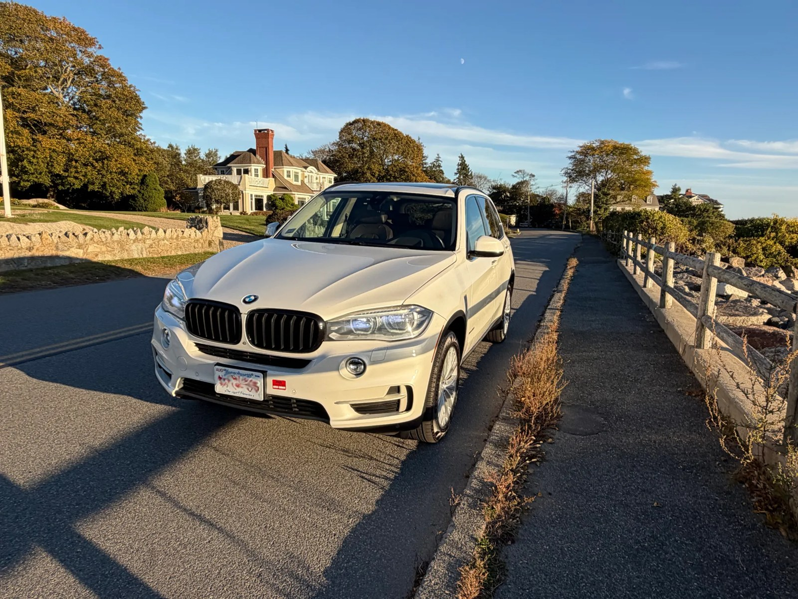
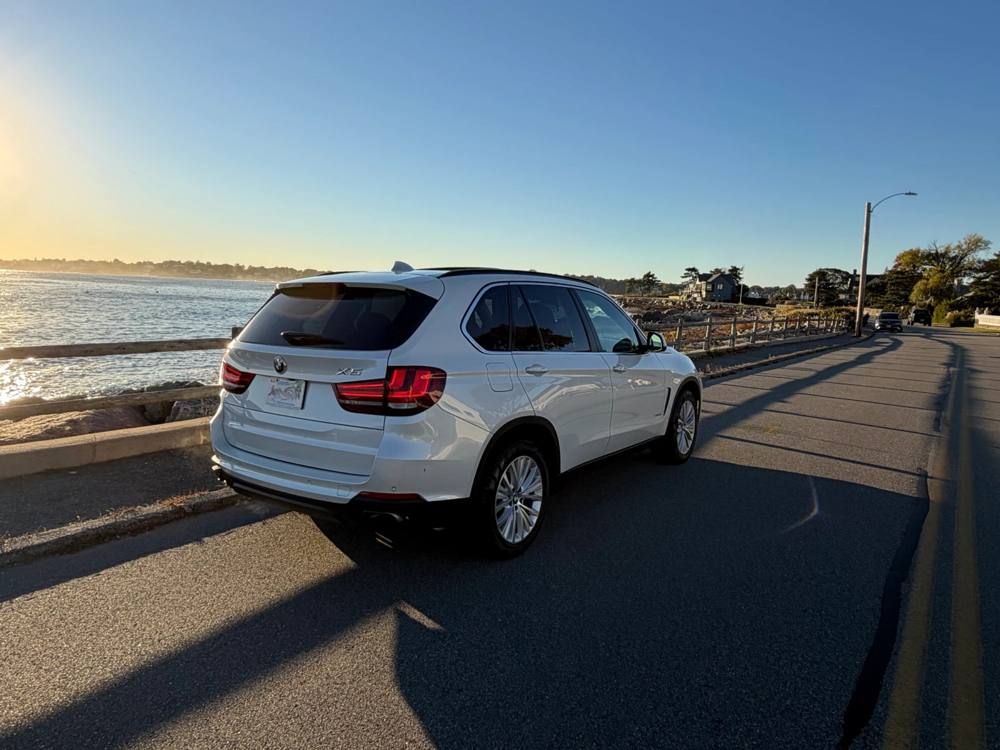
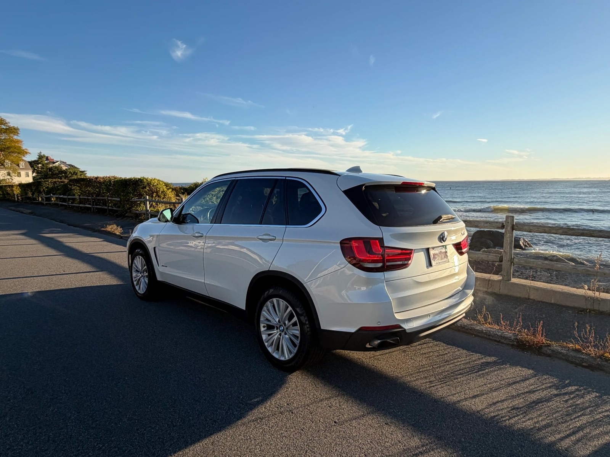
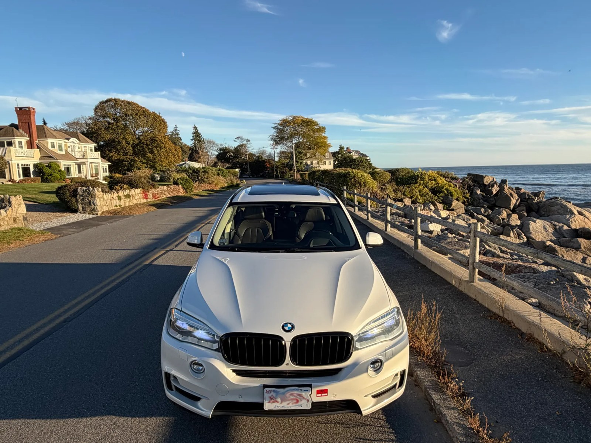
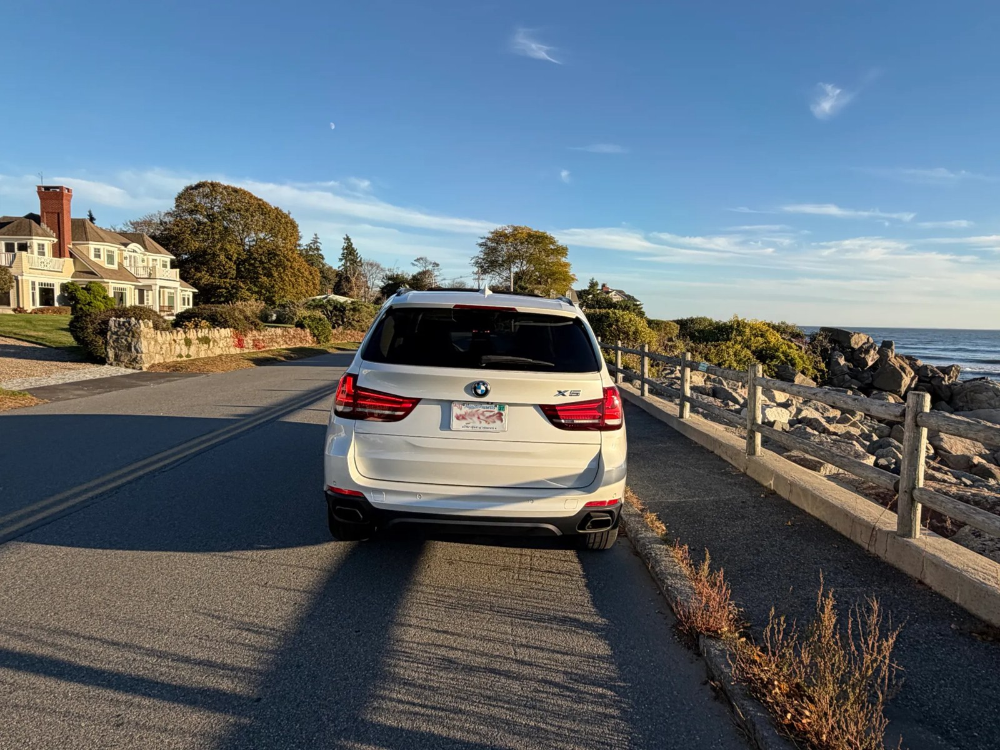
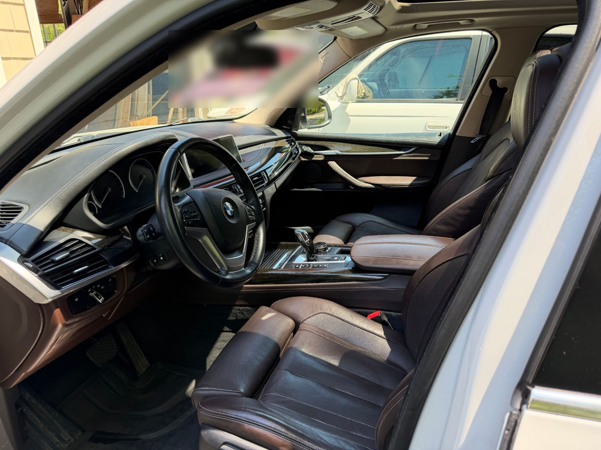
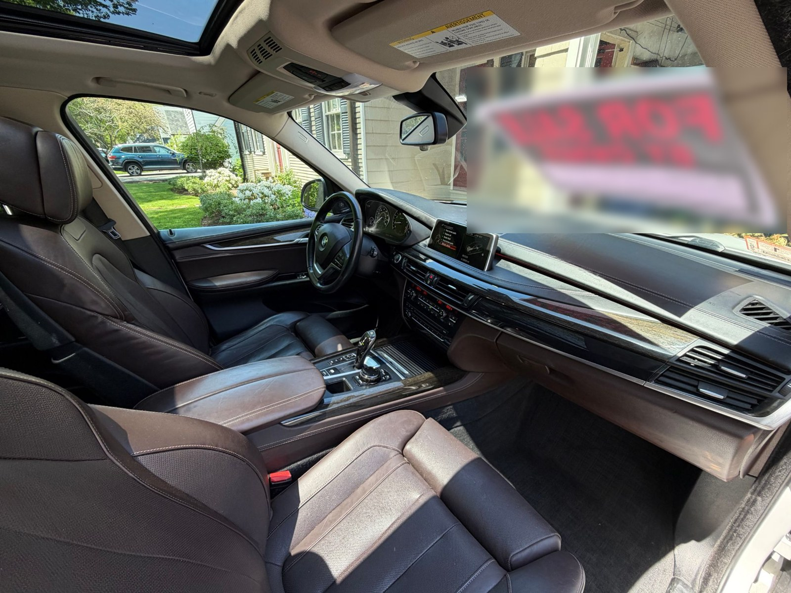
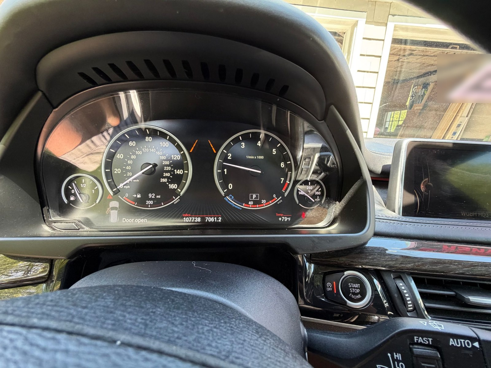
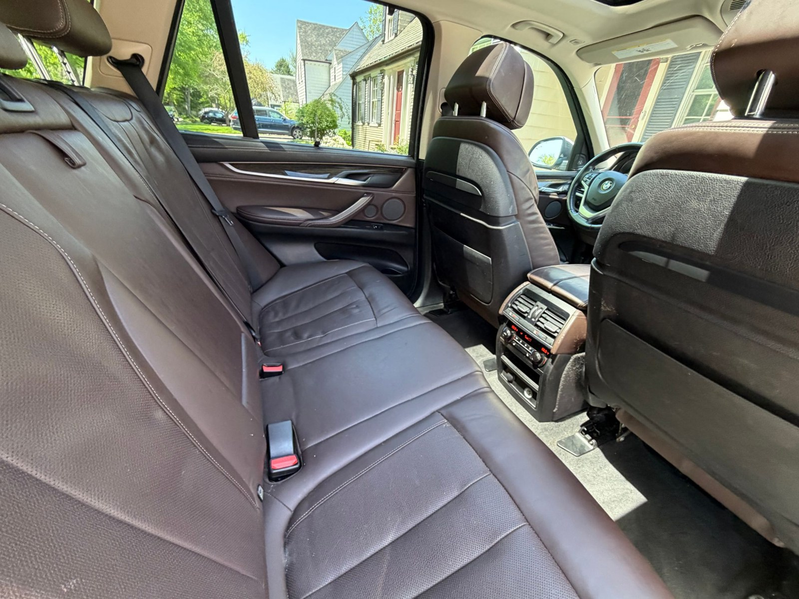
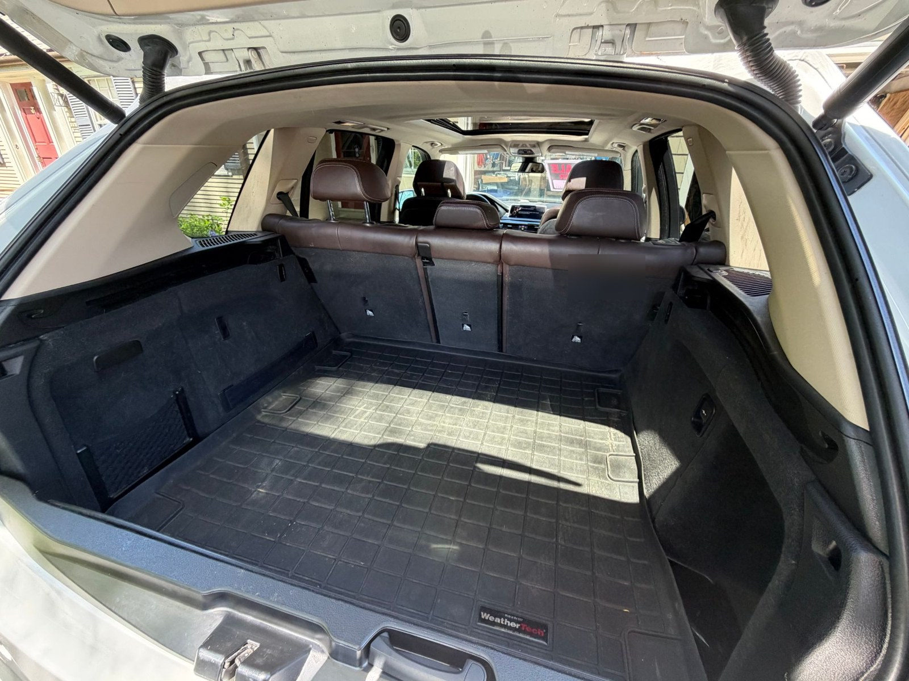
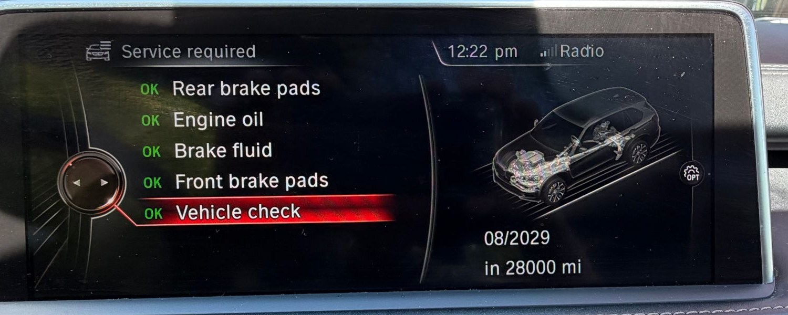
What sets it apart from the other X5s near Boston
- The V8, not the six
Most X5s for sale locally are the xDrive35i, with a 300 hp six-cylinder. The 50i makes 445 hp and was the top non-M model.
- Priced with the 35i cars
Similar 35i listings nearby ask $13,000 to $14,500 for less engine and usually less equipment.
- Known history
Bought at 73k miles and driven mostly on the highway since. Serviced at Peabody BMW and North Shore Motor Werks, with records.
- Common jobs already done
Spark plugs, ignition coils and front suspension bushings are done, and the windshield was replaced in March 2025, so it's clear rather than pitted from years of highway driving. The head-up display and driver-assistance camera were recalibrated with it.
- Close to fully loaded
Head-up display, soft-close doors, Comfort Access, surround view, adaptive LED headlights, Harman Kardon, ventilated memory seats and heated rear seats, all confirmed from the VIN.
- No surprises
CARFAX shows no accidents, no damage, no odometer problems and no open recalls. Bring your mechanic or book an inspection.
What the reports show
VIN 5UXKR6C58F0J78416. From the CARFAX report dated October 19, 2026 and a VinAudit (NMVTIS) report dated May 22, 2026. Both are available to see.
| Title | Clean. No salvage, junk, rebuilt, flood, hail or lemon brands (CARFAX guaranteed) |
| Accidents and damage | None reported. No structural damage, no airbag deployment |
| Odometer | No rollback or mileage problems. 107,726 miles at the May 2026 Massachusetts inspection |
| Owners | 3 personal owners: New Jersey 2015–2020, New Jersey 2020–2023, Massachusetts since 2023 |
| Recalls | No open recalls |
| Theft and liens | No theft, lien, impound or export records (VinAudit) |
| Service records | 15 on CARFAX, mostly at BMW dealers |
Other X5s for sale within about 40 miles
Facebook Marketplace listings checked October 20, 2026. Mileage and details are as each seller listed them.
| Year | Model | Engine | Miles | Asking | Location | Notes |
|---|---|---|---|---|---|---|
| 2015 | xDrive50i | V8 | ~108,000 | $13,500 | Marblehead | This car. Clean CARFAX, 15 service records |
| 2014 | xDrive50i | V8 | 109,000 | $11,500 | Saugus | Older model year; title and service history not stated |
| 2014 | xDrive35i | 6-cyl | 91,199 | $13,000 | Saugus | Clean title; reduced from $14,495 |
| 2015 | xDrive35i Premium | 6-cyl | 109,000 | $14,500 | Saugus | Same year and mileage, smaller engine; 2 owners |
| 2016 | xDrive35i | 6-cyl | 149,201 | $13,500 | Revere | About 40k more miles; 2 owners |
| 2017 | xDrive35i | 6-cyl | 119,841 | $13,900 | Marlborough | Driver assistance options; more miles |
| 2017 | xDrive35i | 6-cyl | 67,000 | $16,999 | Cambridge | Low miles; 2 owners |
| 2017 | xDrive50i | V8 | 79,999 | $18,000 | Wellesley Hills | Newer and lower miles; $5,100 more |
| 2013 | xDrive35i | 6-cyl | 89,000 | $9,500 | Ipswich | Previous generation (E70); 3+ owners |
For reference, Kelley Blue Book private-party value for this exact trim is $12,440 (Good) to $13,390 (Excellent). VinAudit puts the average sale price of a 2015 X5 xDrive50i at $14,317, based on 204 sales from December 2025 to April 2026.
- 4.4L twin-turbo V8, 8-speed automatic, xDrive AWD
- Mocha Nappa leather, oak wood trim, ceramic controls
- Ventilated front comfort seats with memory and lumbar
- Heated front and rear seats, heated steering wheel
- 4-zone automatic climate control
- Soft-close doors, Comfort Access keyless entry
- Panoramic glass roof, rear sunshades
- Head-up display, Navigation Professional
- Harman Kardon surround sound, satellite radio
- Surround View cameras, rear camera, front and rear parking sensors
- Adaptive LED headlights, LED fogs, automatic high beams
- Lane change warning, Driving Assistant, speed limit display
- Trailer hitch prep, alarm, garage door opener
- Aug 2025, 101.5k: control arm and front radius arm bushings, steering and suspension check
- Aug 2025, 100.7k: oil and filter
- Mar 2025: new windshield at Safelite (head-up display glass with rain and solar sensors), driver-assistance camera recalibrated
- Feb 2025, 91.4k: brake fluid flush, inspection
- Jul 2024, 86.0k: four tires mounted, balanced and aligned
- Dec 2023, 76.5k: ignition coils
- Oct 2023, 74.5k: spark plugs, oil and filter
- Serviced at BMW Peabody, Circle BMW and North Shore Motor Werks
See it in Marblehead
Message me on Facebook Marketplace to ask a question or set up a test drive. Payment is cash or a verified bank transfer, in person.